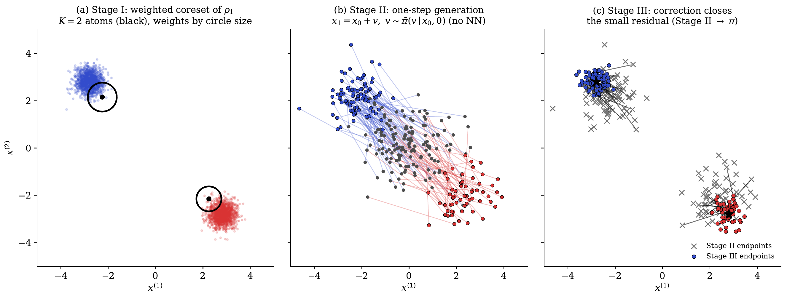
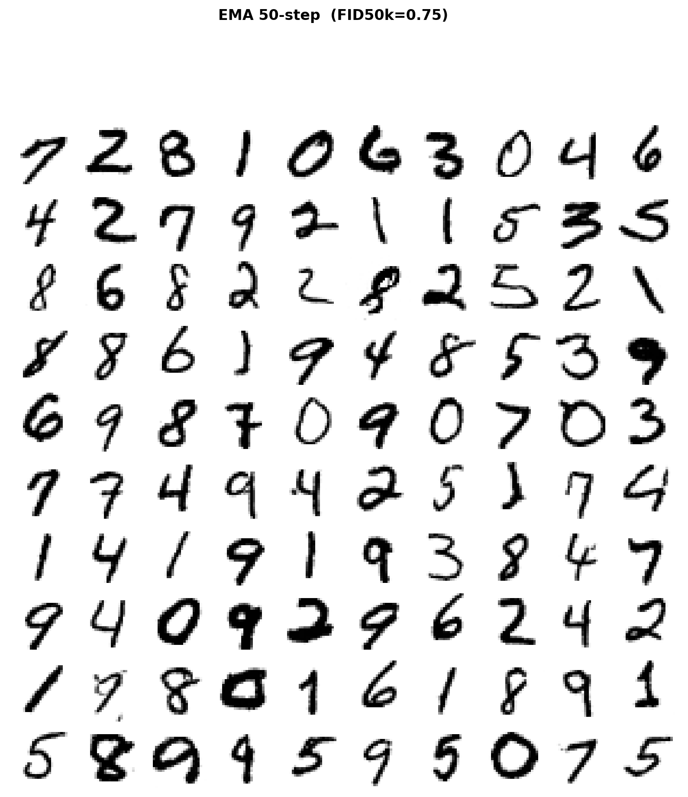
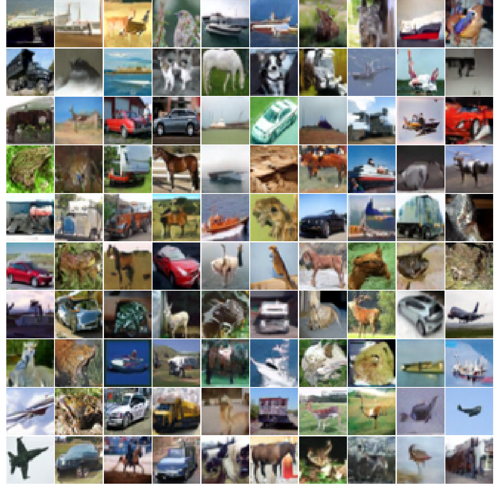
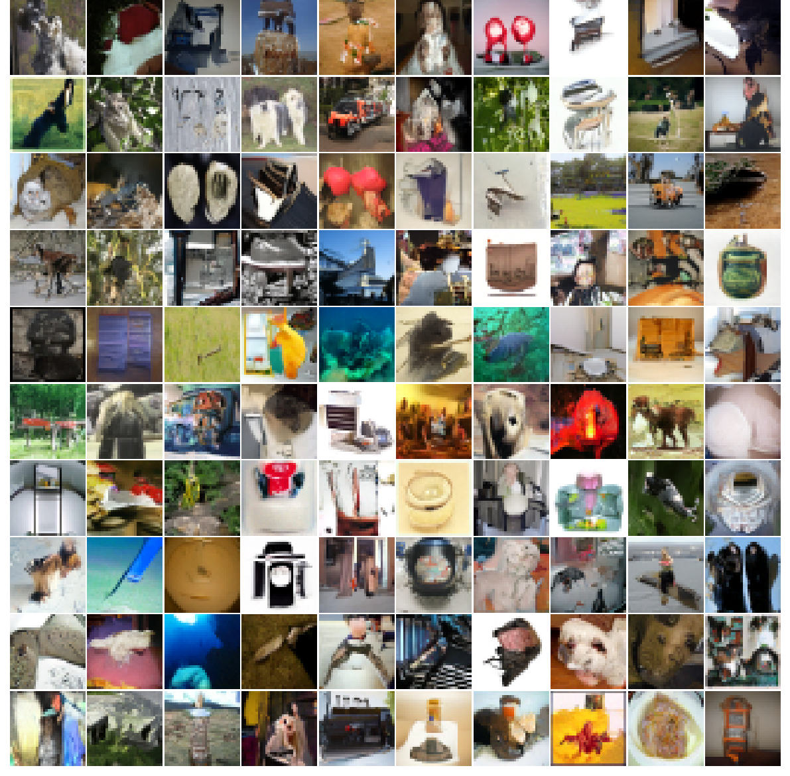
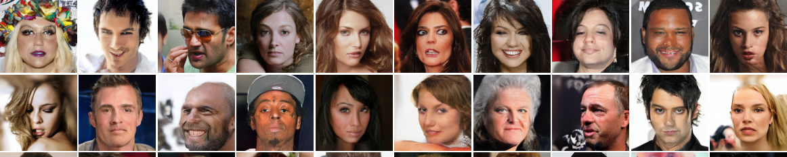
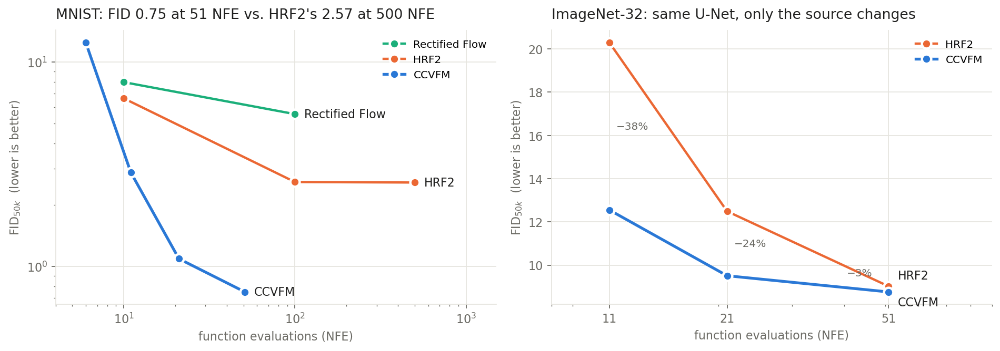
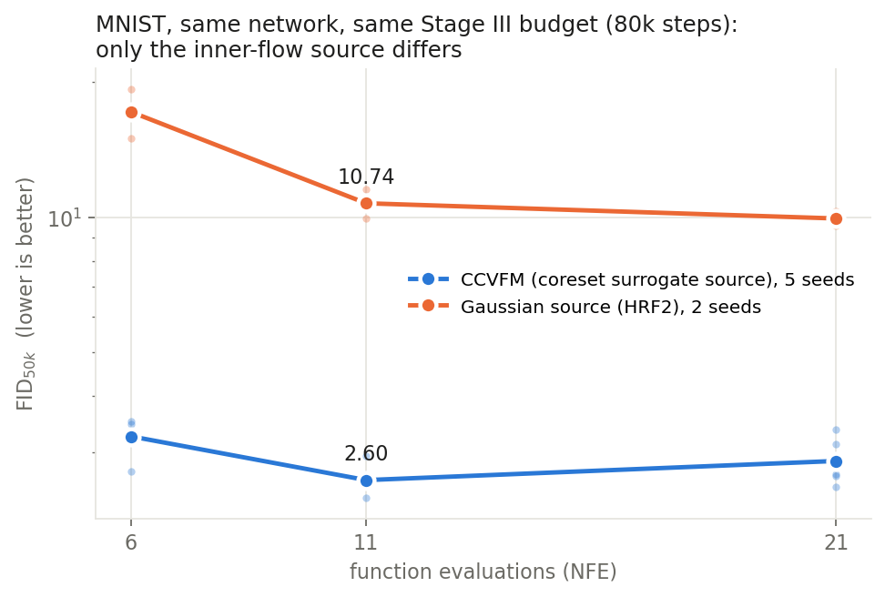
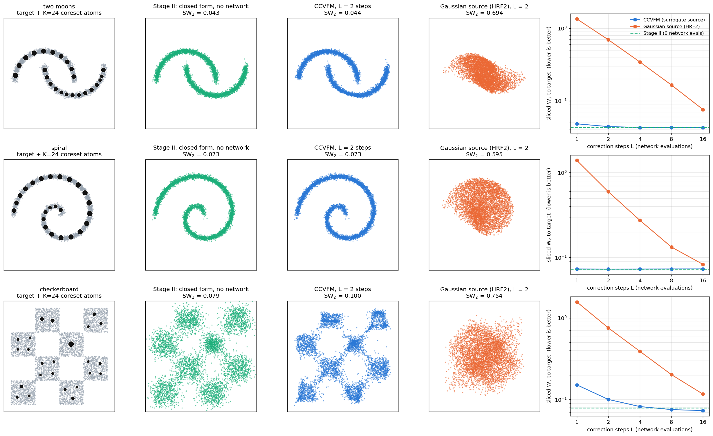

Hierarchical flow matching models the full conditional law of the velocity, but its inner flow starts from pure Gaussian noise and must learn an entire noise-to-data transport. CCVFM starts that inner flow from a closed-form coreset of the data instead, so the network only has to learn a small correction.
We propose Coreset-Induced Conditional Velocity Flow Matching (CCVFM), a generative model that augments hierarchical rectified flow with a data-informed source distribution. CCVFM first compresses the target into weighted atoms using an entropic Sinkhorn coreset and lifts them to a Gaussian mixture. The induced conditional velocity law is then a closed-form Gaussian mixture that can be sampled without a learned neural sampler. A lightweight correction flow, trained from this surrogate source, refines the remaining surrogate-to-target residual rather than learning an entire noise-to-data map. We prove that the surrogate transport cost equals the target–surrogate Wasserstein gap under an explicit compression assumption, whereas the noise-source analogue has a dimension-scale lower bound. On MNIST, CIFAR-10, ImageNet-32 and CelebA-HQ 256, CCVFM reaches competitive few-step generation under matched architectures.
An entropic-Sinkhorn coreset summarises the data by K weighted atoms. Closed-form probabilistic PCA lifts each atom to a Gaussian N(μk, LkLk⊤+σ²I), giving the surrogate ρ̃1.
No network · 95 s for CIFAR-10 at K = 10,000Plugging ρ̃1 into the conditional velocity identity gives an explicit K-component mixture π̃(v | xt, t). At t = 0 it is ρ̃1(x0+v): one categorical draw and one Gaussian draw.
No network · one closed-form drawA correction network is trained by flow matching in velocity space, with the source drawn from π̃ and anchored to the mixture component of each training image. It refines a surrogate-to-target residual, not a noise-to-data map.
The only learned part · L Euler steps at samplingAll four numbers use 51 function evaluations (50 correction steps plus the closed-form draw) and no classifier-free guidance.





Same correction U-Net, same Stage III budget (80k steps) on MNIST. The only change is where the inner flow starts.

| Inner-flow source | 6 NFE | 11 NFE | 21 NFE |
|---|---|---|---|
| Gaussian N(0, I) (HRF2), 2 seeds | 17.17 | 10.74 | 9.94 |
| Coreset surrogate (CCVFM), 5 seeds | 3.25 ± 0.31 | 2.60 ± 0.22 | 2.86 ± 0.36 |
FID50k, lower is better. Theorem 3 explains the gap: the surrogate source leaves only a surrogate-to-target residual to learn (see the checks below).

python examples/toy2d.py.Experiments from our public responses to the NeurIPS 2026 reviewers. Lightweight budgets, so absolute values are not comparable to the main tables. Code: experiments/rebuttal/.
| Dataset (d) | Surrogate | Thm 3(i) | Gaussian | Thm 3(ii) | Ratio |
|---|---|---|---|---|---|
| ring-6 (2) | 8.171 | 8.158 | 8.088 | 8.074 | 1.0 |
| moons (2) | 9.400 | 9.426 | 9.618 | 9.618 | 1.0 |
| pinwheel (2) | 4.993 | 4.988 | 6.508 | 6.486 | 1.3 |
| checkerboard (2) | 5.307 | 5.318 | 6.683 | 6.672 | 1.3 |
| helix (3) | 4.668 | 4.677 | 8.344 | 8.344 | 1.8 |
| MNIST (784) | 105.5 | 105.4 | 1655.2 | 1655.6 | 15.7 |
| CIFAR-10 (3072) | 1528.4 | 1523.2 | 6929.2 | 6929.0 | 4.5 |
Monte-Carlo estimates of E‖V1−V0‖² at t = 0 agree with both closed forms to 0.03–0.3%. On images the surrogate source shrinks the regression target 16× (MNIST) and 4.5× (CIFAR-10).
| r | 6 NFE | 11 NFE | 21 NFE |
|---|---|---|---|
| 10 | 3.18 | 3.47 | 4.35 |
| 30 | 3.25 | 2.60 | 2.86 |
| 50 | 3.14 | 2.38 | 2.60 |
| 200 | 3.22 | 2.36 | 2.64 |
| 784 | 2.90 | 2.40 | 2.82 |
MNIST FID50k, mean over 3 training seeds (5 for r = 30).
| Target | Slope in K | Reading |
|---|---|---|
| thin circle | −0.503 | K−1/2 |
| two moons | −0.467 | K−1/2 |
| helix (3D) | −0.44 | steeper than −1/3 |
| MNIST | −0.162 | deff ≈ 12 |
| CIFAR-10 | −0.136 | deff ≈ 15 |
Sliced W2 on low-dimensional targets; transport-cost proxy on images (nominal d = 784 / 3072).
@inproceedings{she2026ccvfm,
title = {Coreset-Induced Conditional Velocity Flow Matching},
author = {She, Zihua and Su, Jianxi and Wang, Xiao},
booktitle = {Advances in Neural Information Processing Systems (NeurIPS)},
year = {2026},
note = {arXiv:2605.12951}
}